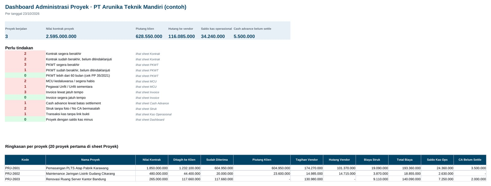
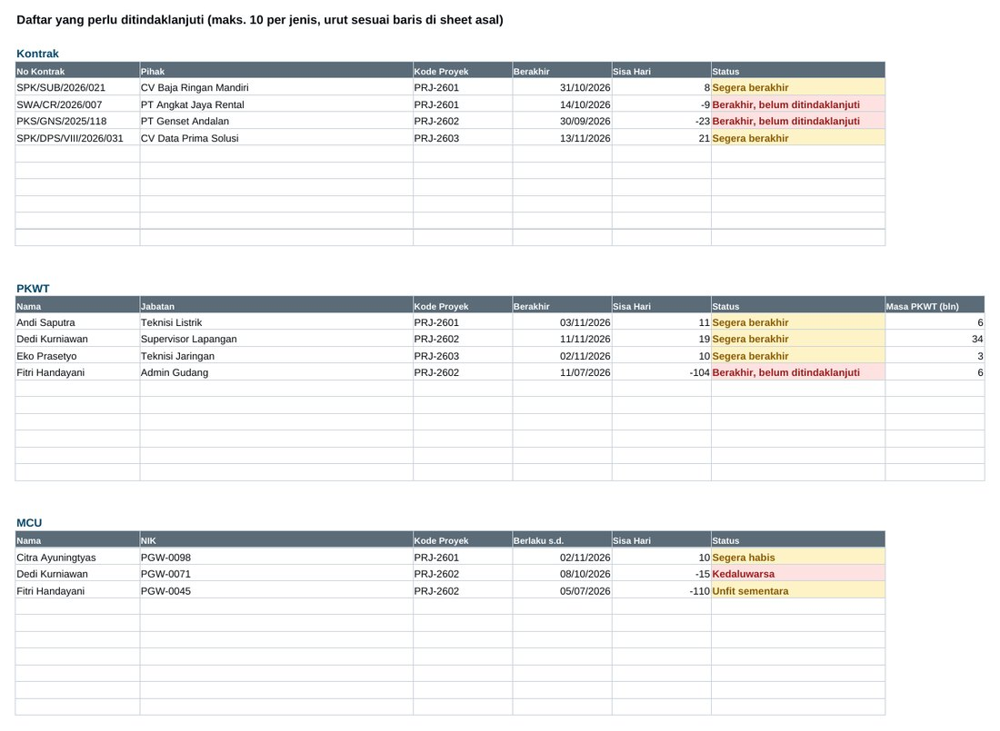
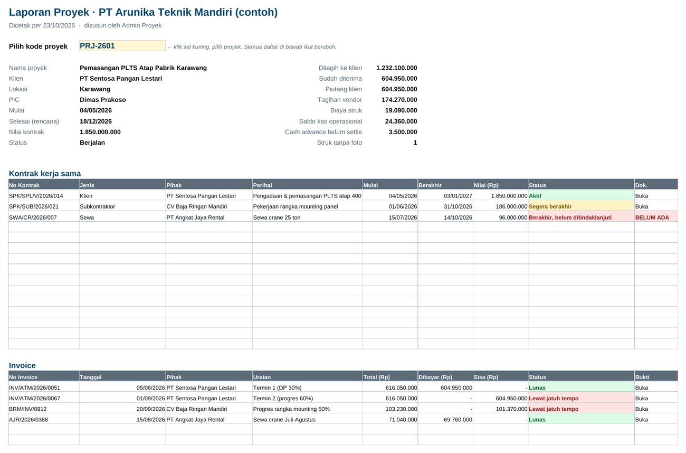
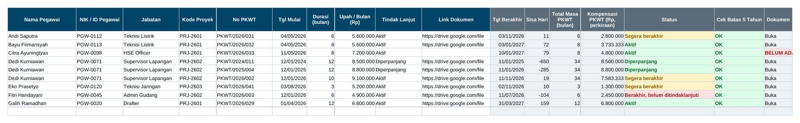
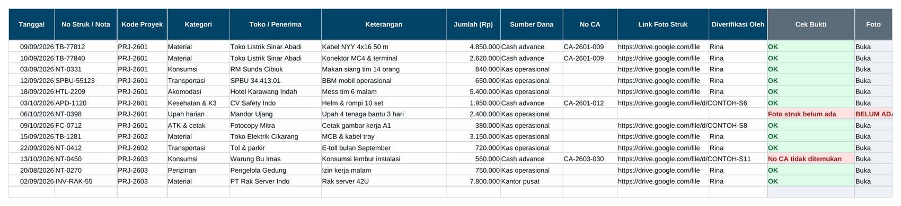

Kontrak atau PKWT siapa yang habis bulan ini?
Dashboard menghitung dan mendaftar kontrak kerja sama, PKWT, dan MCU yang berakhir dalam 30 hari atau sudah lewat tapi belum ditindaklanjuti.
Produk digital · Excel & Google Sheets
Untuk admin proyek yang memegang banyak dokumen sekaligus. Kontrak, PKWT, MCU, invoice, struk, dana operasional, dan cash advance dicatat per proyek di satu file. Tanggal yang hampir lewat langsung terlihat, dan semua bukti satu proyek bisa dicetak dalam satu laporan.
Pembelian lewat WhatsApp. Kami kirim info pembayaran, lalu file dikirim setelah transfer kami terima.
Bayar lewat QRIS, e-wallet, atau transfer bank. File langsung dikirim ke email Anda setelah pembayaran berhasil.

Untuk pertanyaan yang sering datang mendadak
Dashboard menghitung dan mendaftar kontrak kerja sama, PKWT, dan MCU yang berakhir dalam 30 hari atau sudah lewat tapi belum ditindaklanjuti.
Saldo kas tiap proyek dihitung dari dana masuk, struk, cash advance, dan sisa settlement. Pengeluaran berstruk cukup dicatat sekali.
Setiap baris punya link ke file di Google Drive. Laporan Proyek mengumpulkan semua kontrak, invoice, struk, dan cash advance satu proyek, lengkap dengan linknya.
Isi template
Anda mengisi sheet input sesuai kejadian. Dashboard dan Laporan Proyek terisi otomatis.
Bukan hanya jumlah. Dashboard menampilkan nama kontrak, pegawai, invoice, dan cash advance yang perlu diurus, beserta tanggal dan sisa harinya.

Pilih kode proyek, lalu satu laporan berisi data proyek, tagihan, piutang, biaya, saldo kas, serta semua kontrak, invoice, cash advance, struk, dan transaksi kas proyek itu. Siap dicetak A4 untuk atasan, klien, atau auditor.

Satu baris per kontrak, perpanjangan ditulis sebagai baris baru. Template menghitung tanggal berakhir, sisa hari, total masa PKWT per pegawai, dan perkiraan uang kompensasi (masa kerja ÷ 12 × upah, sesuai PP 35/2021). Total masa PKWT di atas 60 bulan ditandai, karena PKWT paling lama 5 tahun.

Struk dicatat dengan sumber dananya: kas operasional proyek, cash advance, atau dibayar kantor pusat. Struk yang memakai cash advance otomatis dijumlahkan sebagai realisasi CA, jadi selisih yang harus dikembalikan atau dibayar langsung terlihat saat settlement.

Sebelum membeli
Spesifikasi
Pertanyaan
Klik Beli sekarang untuk chat dengan kami di WhatsApp. Setelah transfer kami terima, file dikirim lewat WhatsApp atau email, sesuai pilihan Anda.
Setelah pembayaran berhasil, link unduhan langsung dikirim ke email yang Anda isi saat checkout.
Di Google Drive atau penyimpanan perusahaan Anda. Excel tidak menyimpan file, jadi template menyimpan link ke file itu di setiap baris. Pastikan link bisa dibuka oleh orang yang perlu memeriksa.
Template membaca tanggal hari ini setiap file dibuka. Batas hari untuk kontrak, PKWT, MCU, invoice, dan cash advance diatur sendiri di sheet Pengaturan. Peringatan berhenti setelah kolom Tindak Lanjut diisi, misalnya Diperpanjang atau Selesai.
Itu perkiraan dengan rumus PP 35/2021 (masa kerja ÷ 12 × upah per bulan). Upah yang dipakai adalah gaji pokok ditambah tunjangan tetap. Tetap cocokkan dengan HR atau konsultan hukum perusahaan Anda.
Bisa dibuka dan diisi lewat aplikasi Google Sheets atau Excel di HP. Untuk mengisi banyak data sekaligus, lebih nyaman di laptop.
Hubungi kami di WhatsApp +62 819 9888 8967. Kirim screenshot bagian yang error, kami bantu sampai jalan.
Boleh dipakai di perusahaan tempat Anda bekerja atau usaha Anda sendiri. File tidak boleh dijual ulang atau dibagikan ke orang lain.